Retouche faite depuis les sources natives, avec exactement la méthode du n°44 que tu as validée : PNG de travail à la résolution de la source, vert ramené dans la famille du n°260, puis export WebP animé 660 px (et GIF de secours). Rien n'est intégré dans l'application ; aucun GIF livré n'a été remplacé ; l'APK n'a pas été touché.
Même démonstration que le n°44 : les deux GIF livrés sont le même fichier. Je reprends donc la sortie validée du 44, sans recuisson.
WebP animé 660 q90 — n°45 98 ko · 388×660 · 2 phases de 500 ms GIF de secours 403 ko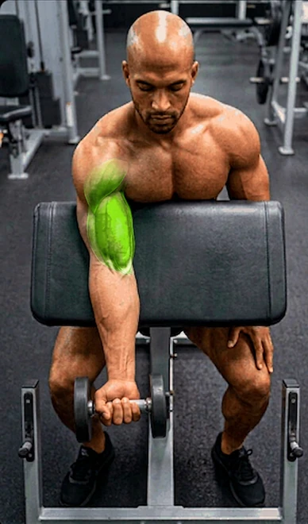
Si l'image bouge (le bras monte), l'animation est lue. Sinon ton navigateur ne lit pas le WebP animé → bouton GIF de secours.
4 phases vérifiées. Le vert de la source est un voile translucide sur l'avant-bras : je l'ai gardé translucide (la peau, les veines et les tendons restent visibles au travers), en écartant le coussin du banc (teal foncé) que l'ancien masque aspirait — c'était la cause du raccord plat. Source 800×1334 → export 396×660 (l'ancien GIF faisait 264×440).
WebP animé 660 q90 — n°48 157 ko · 396×660 · 4 phases de 500 ms GIF de secours 762 ko · 4 phases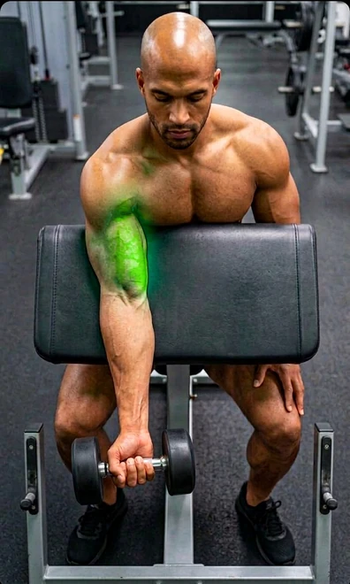
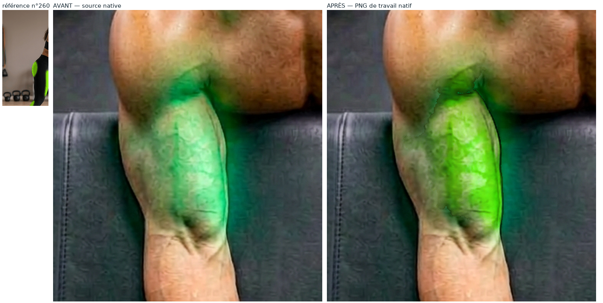
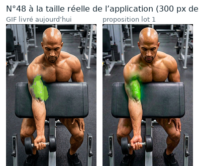
Ici la zone verte de l'app n'est pas un muscle : c'est le panneau vert du legging. Je garde ce panneau réel — son tissu, sa couture, son ombre — au lieu de l'aplat lime du lot68, et je ne touche pas aux plantes du décor. Source 688×768 par phase → export 572×660.
WebP animé 660 q90 — n°19 80 ko · 572×660 · 2 phases GIF de secours 392 ko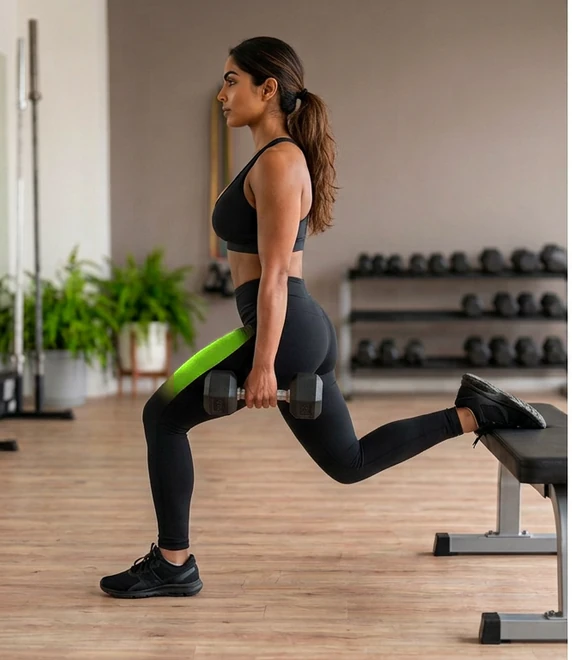
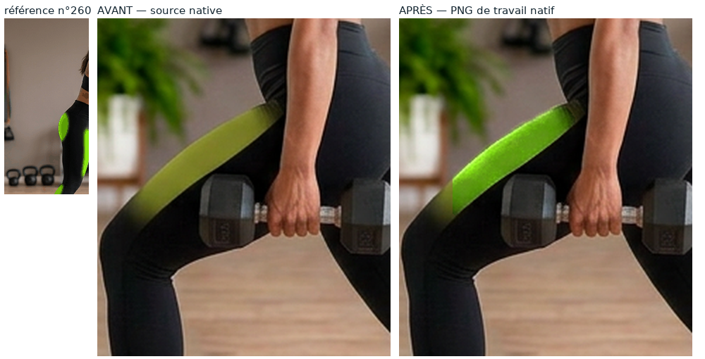
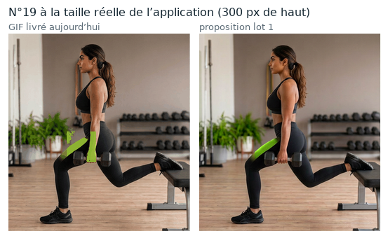
Les deltoïdes sont déjà peints dans la source, avec leur relief. L'ancien export les avait assombris et aplatis (valeur 0,60 → 0,52) : ici je les remonte dans la famille du 260 en gardant la forme anatomique et les ombres. Source 1376×768 → export 1182×660.
WebP animé 660 q90 — n°85 200 ko · 1182×660 · 2 phases GIF de secours 843 ko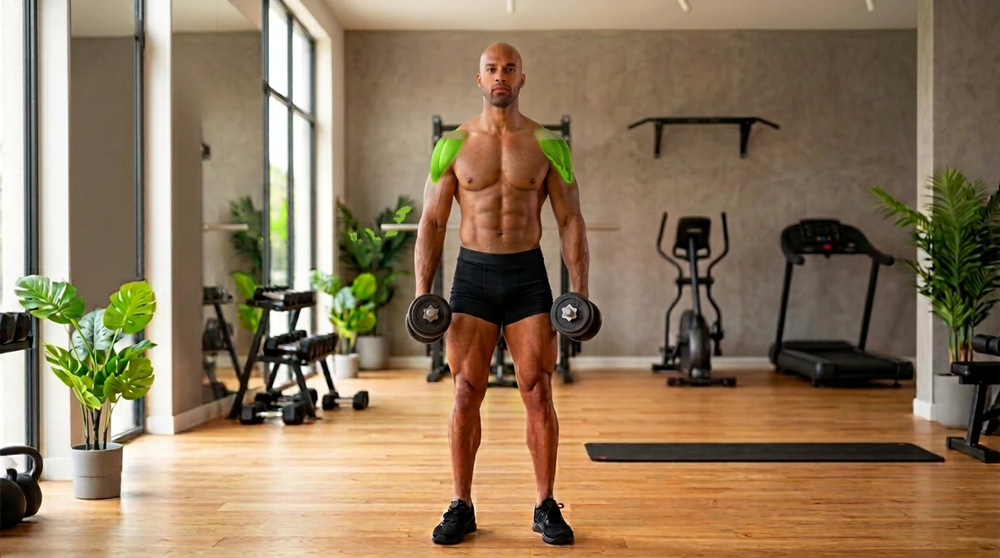
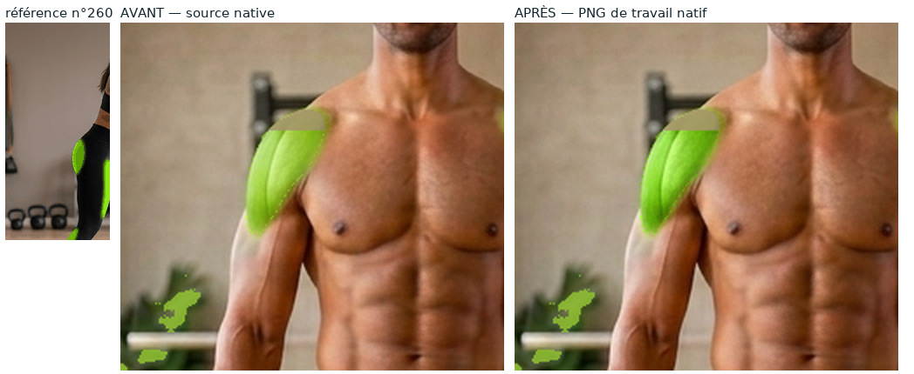
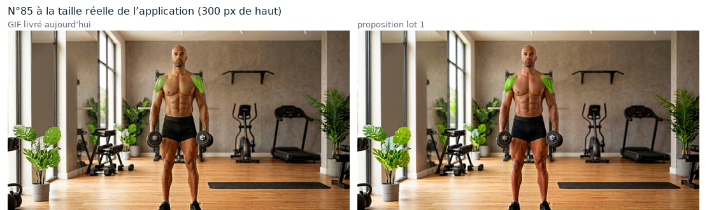
Ces planches montrent ce que contient réellement le fichier exporté (WebP puis GIF rouverts image par image), pas le PNG de travail.
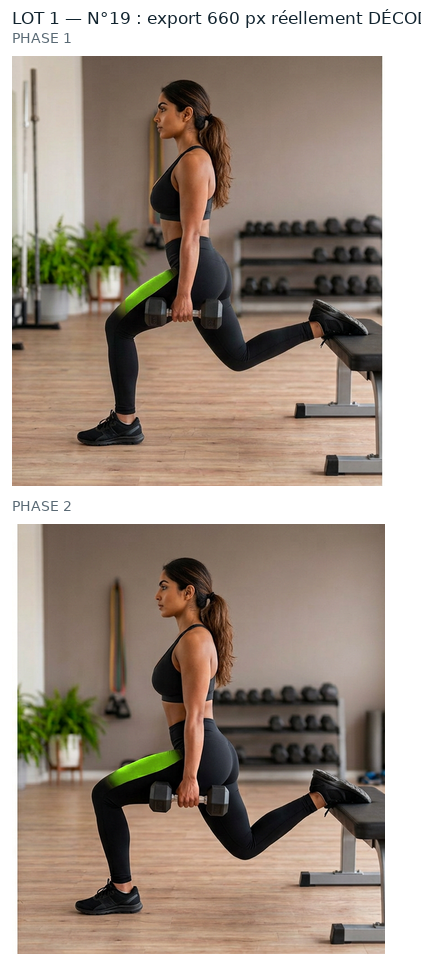
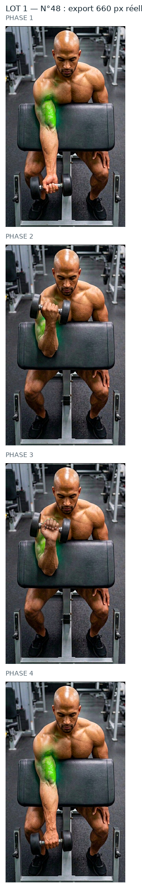
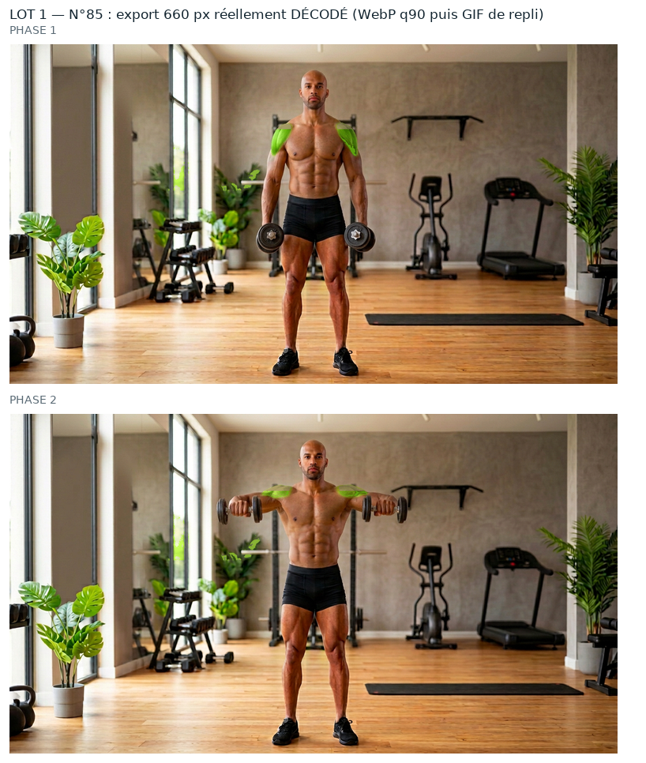
Détail complet (zones, seuils, percentiles, poids, PSNR, garantie « aucun pixel modifié hors zone ») :
evolution/media/refonte-photo/hd-2026-09-30/lot1/CONTROLES.json